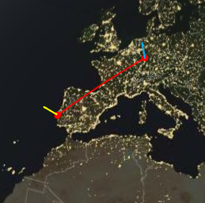

IP da minha máquina: 88.157.199.115 (obtido através de uma pesquisa por "what is my ip" no Google).
A imagem seguinte mostra a localização do IP (imagem obtida com recurso ao website whatismyipaddress.com):
fig.1 - Localização do IP da minhas máquina
(O teste acima não foi possível fazer no telemóvel por não existirem dados móveis disponíveis)
IP do servidor heroku onde está alojado o website app-pweb.herokuapp.com: 54.170.150.88 (obtido através do comando
>tracert app-pweb.herokuapp.com na linha de comandos windows).
A imagem seguinte mostra a localização do IP (imagem obtida com recurso ao website whatismyipaddress.com):
fig.2 - Localização do IP do servidor heroku
Percurso
Para visualizar graficamente por onde passam os pacotes IP, até chegar ao servidor Heroku, foi utilizada a ferramenta GeoTraceroute.
As rotas registadas foram as seguintes:
PT - Prior Velho (0 km)
PT - Lisboa (8 km)
DE - Frankfurt (1879 km)
 fig.3 - Mapa de rotas dos pacotes IP
Inspect
Com a funcionalidade Inspect do browser, acedendo ao separador Network, é possível visualizar o conteúdo recebido do servidor, após o cliente ter enviado
uma mensagem HTTP GET. Um dos ficheiros recebidos, corresponde ao ficheiro HTML da página web, é do tipo document e tem o tamanho de 1.1 KB. O outro
conteúdo é a imagem "wordcloud" e é do tipo png. Para além da informação anterior, é possível visualizar o tempo gasto.
Após clique no hiperlink existente no website, são descarregados 37 ficheiros, como mostra a seguinte imagem:
fig.5 - Inspect Network do Hiperlink
Voltando à aplicação alojado no heroku, dos ficheiro recebidos, um é do tipo document (ficheiro da página HTML) e o outro é do tipo png (imagem wordcloud). O ficheiro do tipo document
teve um tempo de espera de 53.39 ms e um tempo de descarregamento de 0.78 ms. Por sua vez, a imagem demorou 24 µs a ser descarregada.
Ao selecionar cada um dos ficheiro podemos visualizar o seguinte: